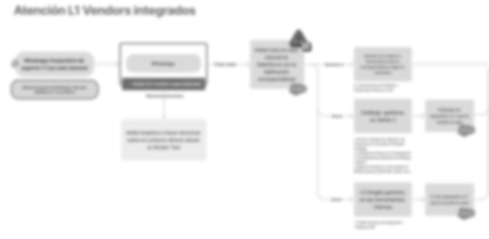
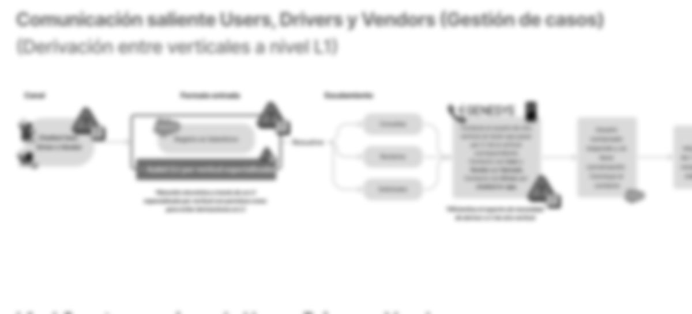
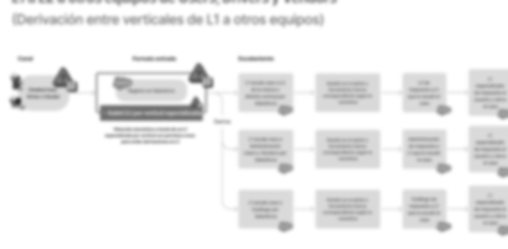

Caso 03 · Service Designer Ssr. · Monchis · 2026Case 03 · Service Designer · Monchis · 2026
Un solo lugar para atender a usuarios, repartidores y comercios.One place to support users, riders and merchants.
Discovery e ideación del modelo de atención para implementar un CRM y canales digitales en Monchis. El objetivo: anticipar riesgos, alinear a los equipos y definir cómo debería funcionar el soporte de las tres verticales.Discovery and ideation of the support model to roll out a CRM and digital channels at Monchis. The goal: anticipate risks, align teams and define how support should work across the three verticals.
- RolRole
- Service Designer Ssr. · ejecución del proyectoService Designer · project execution
- EquipoTeam
- Con Abril Salas (Service Designer de Care & Comms) y Agustina Chavarini (Service Designer de Monchis). En sinergia con Operaciones: Ana Cassino.With Abril Salas (Care & Comms Service Designer) and Agustina Chavarini (Monchis Service Designer). In synergy with Operations: Ana Cassino.
- MétodoMethod
- Journey del pedido, mapeo de procesos internos, escenarios, shadowing y flujos TO-BEOrder journey, internal process mapping, scenarios, shadowing and TO-BE flows
- EstadoStatus
- Se aplazó su implementación por financiamientoImplementation postponed due to funding
Contexto y retoContext and challenge
Si una vertical falla, se rompe todo el pedido.If one vertical fails, the whole order breaks.
Monchis funciona con tres actores codependientes: quien pide, quien prepara y quien entrega. El soporte de cada uno vivía en herramientas distintas, y resolver un solo incidente obligaba a los agentes a saltar entre plataformas y triangular información con otros equipos.Monchis runs on three interdependent actors: who orders, who prepares and who delivers. Support for each lived in different tools, and solving a single incident forced agents to jump between platforms and triangulate information with other teams.
Copy-paste entre sistemasCopy-paste across systems
Sin una base centralizada, el trabajo manual y la fatiga cognitiva se disparaban.Without a central record, manual work and cognitive load skyrocketed.
Asignación manualManual assignment
Los casos escalados llegaban a una bandeja común donde cada agente debía autoasignarse.Escalated cases landed in a shared inbox where agents had to self-assign.
Chats que se cerraban solosChats that closed on their own
Sin notificaciones, el chat expiraba por inactividad y el usuario tenía que empezar de cero.Without notifications, chats expired from inactivity and users had to start over.
Cero trazabilidadNo traceability
El contacto con comercios pasaba por WhatsApp sin registro ni métricas de soporte.Merchant contact went through WhatsApp with no record or support metrics.
Sin historial, más fraudeNo history, more fraud
Al no ver reclamos recurrentes, era imposible detectar patrones de abuso en compensaciones.Without visibility of repeat claims, abuse patterns in compensation went undetected.
El retoThe challenge
De tres formas de gestionar casos a una sola, sin perder lo que ya funcionaba.From three ways of managing cases to one, without losing what already worked.
Cada vertical gestionaba sus casos a su manera. El reto era unificarlas en un solo modelo que conservara las facilidades que los equipos ya tenían, así que definimos con ellos los no negociables de la implementación en tres frentes:Each vertical managed its cases its own way. The challenge was to unify them into a single model that kept what teams already had, so we defined the implementation must-haves with them across three fronts:
Proceso y mi aporteProcess and my role
Entender el pedido de punta a punta antes de elegir una herramienta.Understanding the order end to end before choosing a tool.
01
Journey del pedidoOrder journey
Mapeé cómo se gestiona una orden en las tres verticales y en qué momentos cada actor contacta a soporte.I mapped how an order is handled across the three verticals and when each actor contacts support.
02
Procesos internosInternal processes
Entendí cómo los equipos internos atienden a los actores externos, con qué herramientas y dónde se rompe el flujo.I looked at how internal teams support external actors, with which tools, and where the flow breaks.
03
Dolores y no negociablesPains and must-haves
Sinteticé dolores y riesgos por vertical y definí con los equipos los no negociables de la implementación.I synthesised pains and risks by vertical and defined the implementation must-haves with the teams.
04
Flujos TO-BETO-BE flows
Con shadowing y mesas de trabajo, diseñé y validé con los equipos los cinco flujos del nuevo modelo.Through shadowing and working sessions, I designed and validated the five flows of the new model with the teams.
La propuestaThe proposal
Un modelo de atención donde el caso viaja, no el agente.A support model where the case travels, not the agent.
Diseñamos cinco flujos TO-BE: comunicación saliente entre verticales, derivación de L1 a L2 y otros equipos, atención especializada a repartidores, soporte a comercios integrados y soporte comercial. Todos siguen la misma lógica:We designed five TO-BE flows: outbound contact between verticals, hand-offs from L1 to L2 and other teams, specialised rider support, integrated-merchant support and sales support. They all follow the same logic:
Chat, app o WhatsAppChat, app or WhatsApp
El caso nace en el CRMThe case is born in the CRM
Resuelve o contacta otra verticalResolves or contacts another vertical
A L2, Catálogo o Administración, solo por equipoTo L2, Catalogue or Finance, team-only
L1 responde y cierra el casoL1 replies and closes the case
CSAT en el mismo chatCSAT in the same chat
Cambio clave 01Key change 01
Se acaban las derivaciones en L1No more L1 hand-offs
Un L1 por vertical, con permisos para contactar directamente a usuarios, repartidores o comercios y resolver el caso sin pasarlo a otro agente.One L1 per vertical, with permission to contact users, riders or merchants directly and solve the case without passing it on.
Cambio clave 02Key change 02
Derivar a equipos, no a personasHand off to teams, not people
La ticketera se reemplaza por derivación automática en el CRM, siempre hacia un equipo, para reducir riesgos operativos.The ticketing tool is replaced by automatic hand-offs in the CRM, always to a team, to reduce operational risk.



ResultadosResults
Una hoja de ruta lista para implementar.A roadmap ready to implement.
EntregadoDelivered
Discovery e ideación completosDiscovery and ideation completed
Journey del pedido, mapa de procesos internos, escenarios con pros y contras, no negociables del modelo de atención y cinco flujos TO-BE. El modelo quedó documentado y listo para implementarse.Order journey, internal process map, scenarios with pros and cons, support-model must-haves and five TO-BE flows. The model was documented and ready to implement.